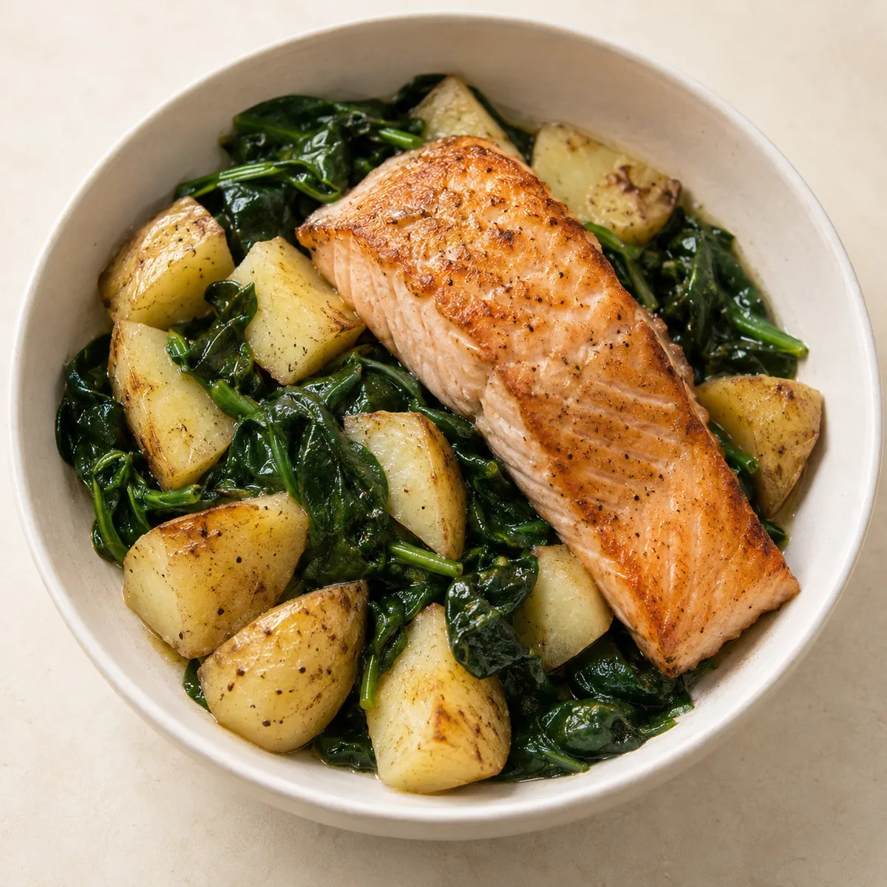

Ingredients combined.
Not split per dish but added up across every meal — the way a shop actually happens.
SmartBasket plans meals against a household’s nutrition targets and turns them into what actually has to be bought: whole packages, quantities, a total.

A finished plan leaves behind something a retailer recognises.
Not split per dish but added up across every meal — the way a shop actually happens.
Pack sizes instead of gram figures, plus an estimated basket total that can be checked against a budget.
What remains goes into the pantry and is credited against later plans instead of being bought again.
Today it comes from Open Food Facts: products, pack sizes, nutrition. That layer could be swapped for a retailer’s assortment without touching the planning logic.
What would help: article identifiers, pack sizes, prices and, where available, availability.
Screen from the development app. Products and prices shown are example data.

This list is here on purpose. A conversation starts better from an honest position than from an announcement.
The pantry saves trips, not revenue.
Planning before the shop means buying too little less often and throwing away less. On top of that sits an app people open before they shop — which is where the decision about the assortment is actually made.
I am looking to talk to retailers who want to test this against their own assortment. Concretely useful would be access to assortment and pack data, and a small pilot.
Samaana Zakharova · samzakharo@gmail.com
View the project on GitHubSource code, build instructions and the latest Android build.
Full details in the legal notice.